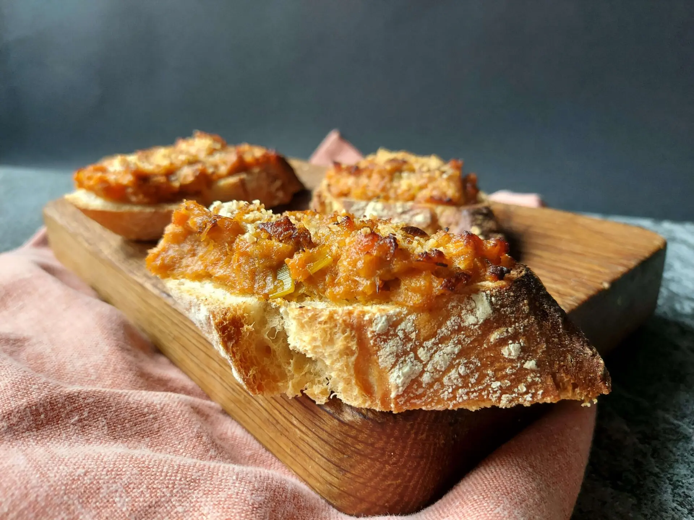

Tapa de Jamón y Queso
Ingredientes: Jamón serrano, queso e higos frescos
Pasos para prepararlo:
- Coloca el jamón serrano sobre las rebanadas del pan.
- Agrega las lonchas de queso.
- Pon los higos frescos cortados encima.

Tapa de Parma Ham y Mozzarella
Ingredientes: Pan de orejones, Parma ham, higos frescos y mozzarella
Pasos para prepararlo:
- Coloca las rebanadas de pan de orejones en la base.
- Agrega las lonchas de jamón de parma e higos frescos.
- Coloca una bola pequeña de mozzarella encima.
Tapa de Tortilla de Patatas
Ingredientes: Tortilla de patatas, pimientos de piquillo, pan, aceite de oliva virgen extra, sal y pimienta
Pasos para prepararlo:
- Preparar la tortilla de patatas.
- Cortar la tortilla en trozos y colocar sobre el pan tostado.
- Colocar un pimiento de piquillo encima y salpicar con sal y pimienta.
Tapa de Anchoas y Mermelada de Pimientos Rojos
Ingredientes: Anchoas, aceitunas, mermelada de pimientos rojos, pan, aceite de oliva virgen extra
Pasos para prepararlo:
- Tostar el pan y untar con mermelada de pimientos rojos.
- Añadir una o dos anchoas sobre el pan.
- Colocar unas aceitunas y rociar con aceite de oliva virgen extra.
Tapa de Jamón y Queso Fundido
Ingredientes: Jamón serrano, queso, pimiento verde, anchoas, aceitunas, pan, aceite de oliva virgen extra
Pasos para prepararlo:
- Tostar el pan y colocar el queso encima para fundirlo.
- Agregar una loncha de jamón y pimiento verde cortado.
- Colocar una anchoa y una aceituna encima.

Tapa de Txangurro
Ingredientes: Txangurro, pan, mayonesa, limón, perejil fresco, aceite de oliva virgen extra
Pasos para prepararlo:
- Preparar el txangurro y mezclar con mayonesa y limón.
- Colocar la mezcla sobre el pan tostado.
- Decorar con perejil fresco y rociar con aceite de oliva virgen extra.